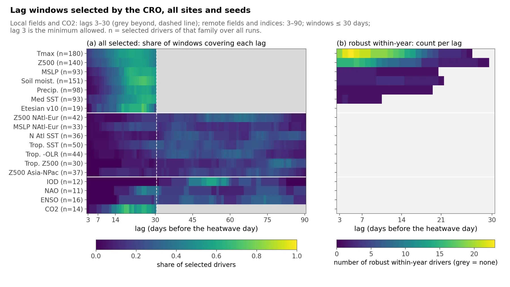
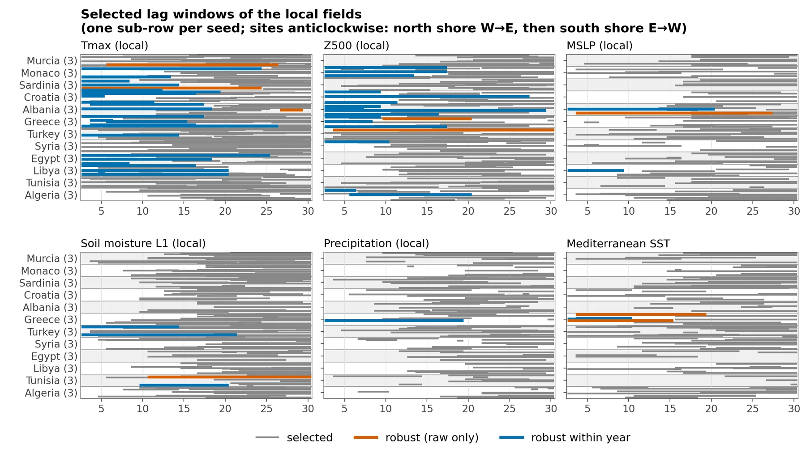
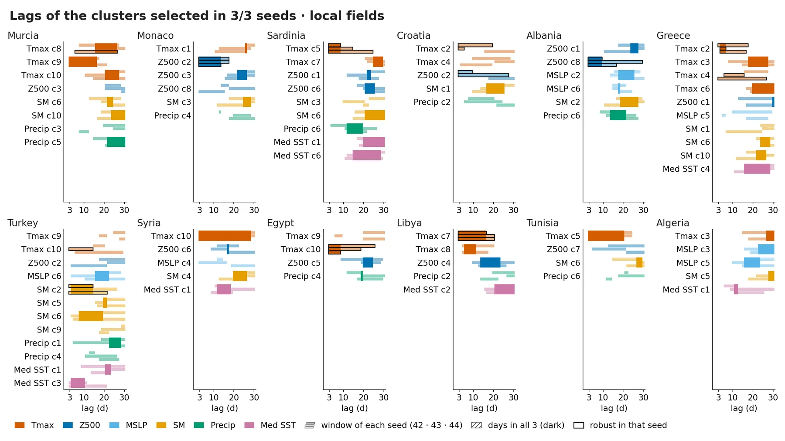
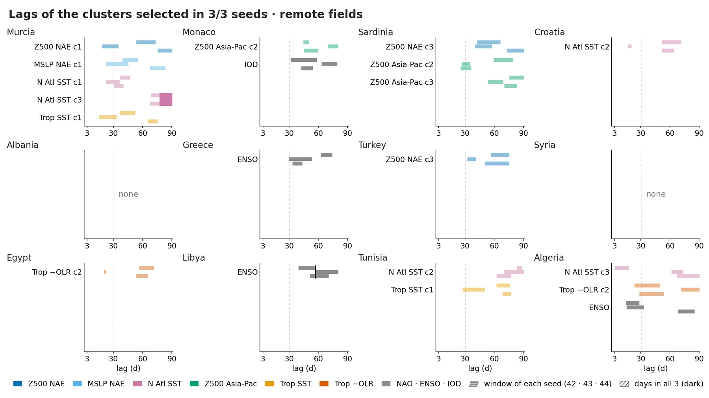
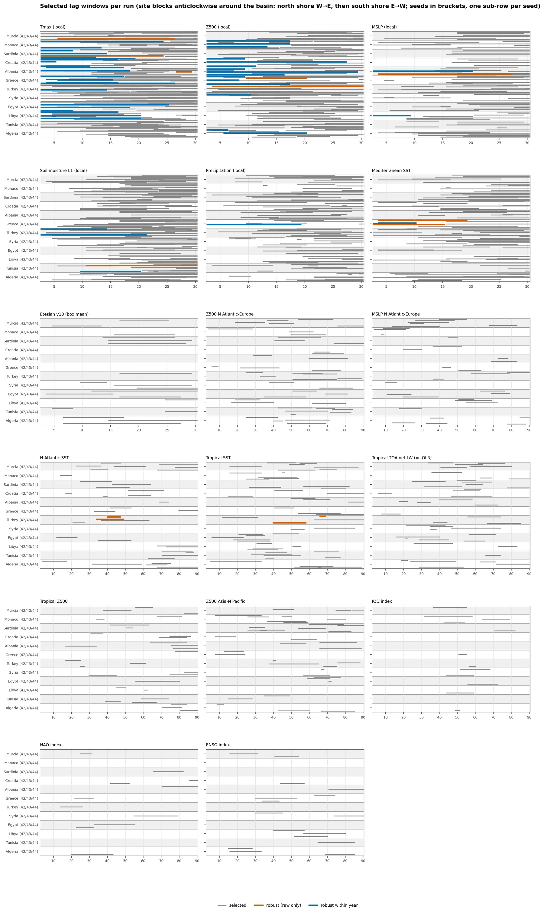
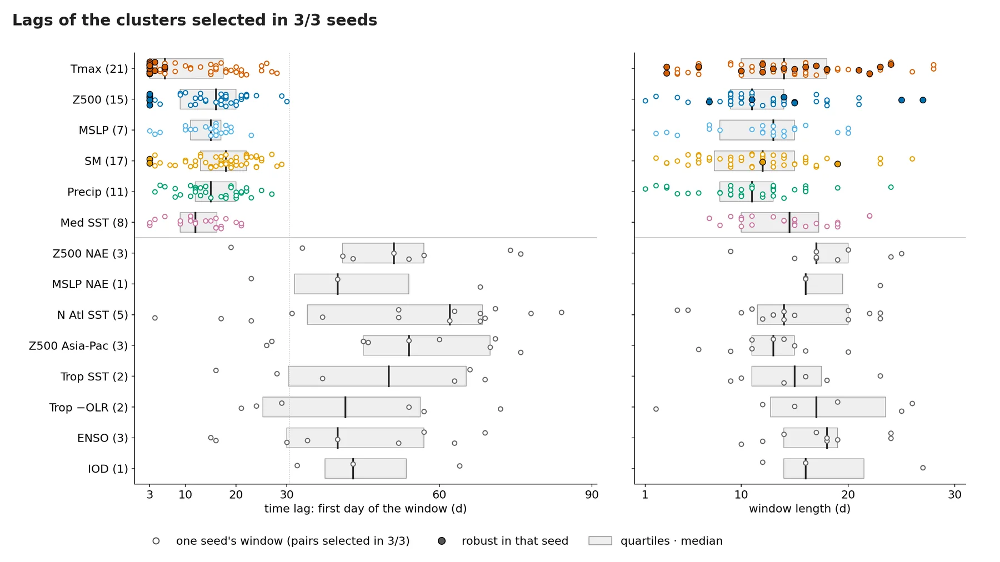

Time lags
How many days ahead the selected drivers act.
Selected lag windows
Lag coverage of CRO-selected windows per driver family, all 36 runs

About this figure
(a) For each driver family (n = selected drivers over all runs), the share of selected lag windows that cover each lag; local fields and CO2 may only use lags 3–30 (grey beyond), remote fields and indices 3–90. (b) Number of robust within-year drivers covering each lag; only local fields have any. Of the 48 robust within-year windows, 40 start at the minimum lag of 3 days.
general/figuras/slides/S03a_lag_coverage.png
Selected lag windows of the six local fields, per site and seed

About this figure
One horizontal bar per selected lag window (days before the heatwave day), with one sub-row per seed and sites ordered anticlockwise around the basin. Grey: selected; orange: robust in raw composites only; blue: robust within year. This slide shows only Tmax, Z500, MSLP, soil moisture, precipitation and Mediterranean SST; the full-size figure covers all driver families.
general/figuras/slides/S03b_lag_windows_local.png
Lag windows per site
Local fields: lag windows of each seed for clusters selected in 3/3 seeds

About this figure
One panel per site, with one row per local cluster selected by all 3 seeds and colour by field. The three thin light strips are the windows of seeds 42, 43 and 44 (top to bottom), the dark full-height bar marks the days common to all three, and a black outline means the window is robust in that seed. In 22 of the 79 local 3/3 pairs the three windows share no day: the same cluster is chosen at different lags.
presentacion/figuras/06a_lags_local.png
Remote fields and indices: lag windows of each seed for 3/3 clusters

About this figure
Same encoding as the local panel, for remote clusters and the NAO, ENSO and IOD indices (grey) on a 3–90 d axis; the dotted line marks 30 d. No remote window is robust, the three windows share no day in 18 of the 20 remote 3/3 pairs (indices included), and Albania and Syria have no remote driver selected in all 3 seeds.
presentacion/figuras/06a_lags_remote.png
Lag windows chosen by the CRO
Selected lag windows per run, one panel per field or index (36 runs)

About this figure
Each horizontal bar is the lag window of one selected driver; site blocks run anticlockwise around the basin with one sub-row per seed (42/43/44), local panels span lags 3–30 and remote and index panels 3–90. Grey = selected, orange = robust but not within year, blue = robust within year. Robust within-year windows appear only in local fields, mostly Tmax (24) and Z500 (16).
general/figuras/03b_lag_windows_all_families.png
Lag distributions
Time lag and window length of every seed's window for 3/3 pairs, by field

About this figure
Left: time lag (first day of the window); right: window length, for each seed's window of every site–driver pair selected by all 3 seeds, grouped by field (number of pairs in parentheses). Filled markers = window robust in that seed, boxes = quartiles and median, remote rows in grey, dotted line = 30 d. The median time lag is 6 d for Tmax and 16 d for Z500, robust windows start at a median of 3 d, and remote fields and indices have median time lags of 40–62 d.
presentacion/figuras/06b_lag_distribution.png